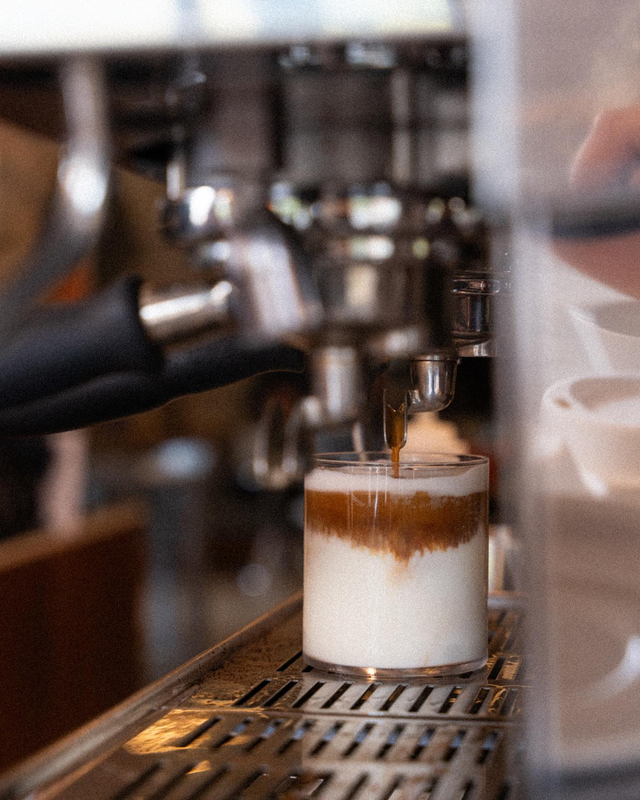
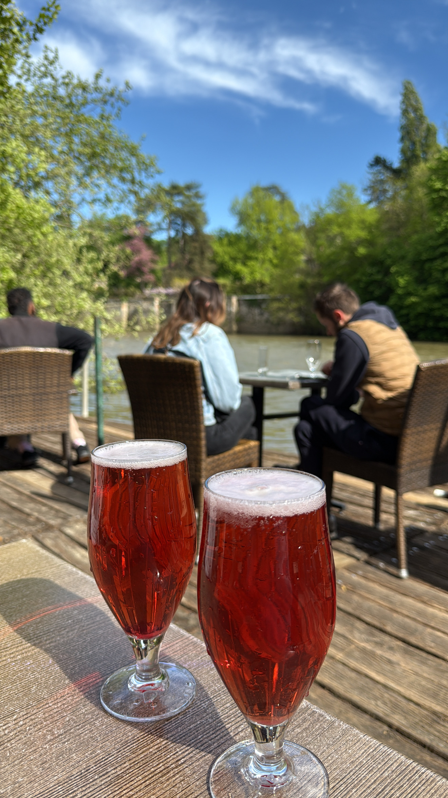

Découvrez les endroits idéals pour savourer de délicieuses boissons et se relaxer.

📍 60 Quai de Pierre-Scize, 69005 Lyon
Le Caillou propose une carte variée, allant des cafés de spécialité aux plats faits maison comme des hot-dogs gourmets, des tapas et des pâtisseries. Les visiteurs apprécient particulièrement la qualité des produits et le service attentionné . De plus, l'établissement participe à des initiatives anti-gaspillage en collaborant avec des plateformes telles que Too Good To Go .

📍 3 Quai Raoul Carrié, 69009 Lyonr
Situé en bord Saône dans un cadre calme avec une vue dégagée sur le fleuve et l'île Barbe, Les terrasses de l'île Barbe vous propose une multitude de plats frais et bios adaptés a tout les palais.